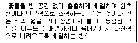
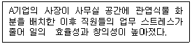
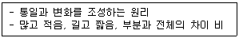

화훼장식기능사 (2012-02-12 기출문제)
1과목: 화훼장식재료
1. 꽃의 기능에 대한 설명으로 틀린 것은?
- 꽃의 근본 기능은 생식이다.
- 풍매화의 꽃은 대부분 형태가 아름답다.
- 충매화는 꽃잎의 형태를 복잡하게 하여 곤충을 유혹한다.
- 꽃가루의 수분은 암술머리에서 이루어진다.
(정답률: 61%)

2. 열매에 대한 설명으로 틀린 것은?
- 모과, 죽절초, 남천 등의 열매는 관상가치가 높다.
- 핵과는 장과와 비슷하지만 내과피가 얇고 부드럽다.
- 진과는 자방벽이 발달한 열매이다.
- 밤, 호두, 개암 등은 대표적인 견과이다.
(정답률: 62%)
3. 꽃의 형태별 분류에 따른 설명으로 옳은 것은?
- 매스플라워는 만개시 별 모양, 삼각형 등의 모양으로 개화한다.
- 안개초, 스타티스, 카스피아는 라인 플라워에 속한다.
- 칼라, 튤립, 아이리스는 매스 플라워에 속한다.
- 폼 플라워(form flower)는 작품의 중심부에 꽂아 강조하는 역할을 한다.
(정답률: 70%)
4. 서양 디자인에서 전통 스타일을 제작할 때 플로랄 폼을 화기에 고정하는 방법으로서 가장 적합한 것은?
- 밖으로 보이지 않게 화기보다 낮게 고정한다.
- 화기 가운데만 플로랄 폼을 고정하고 주변으로 여유가 있도록 한다.
- 화기 바깥으로 충분히 넘치도록 고정시킨다.
- 화기보다 약간 높게 고정시킨다.
(정답률: 79%)
5. 식물 화기의 특징에 대한 설명으로 틀린 것은?
- 팬지는 보통의 꽃으로 바깥쪽부터 꽃받침, 꽃잎, 수술, 암술의 순으로 배치된다.
- 백합은 꽃받침편이 꽃잎화하여 꽃잎과 공존하면서 꽃을 형성한다.
- 안수리움의 꽃잎은 소형화 또는 정상이지만 포엽이 꽃잎화하여 눈에 띈다.
- 튤립의 꽃잎은 소형화로서 꽃받침이 꽃잎화 하여 눈에 띈다.
(정답률: 60%)
6. 화훼장식에 대한 설명으로 틀린 것은?
- 채소나 과일은 화훼장식재료로 부적합하다.
- 화훼식물을 이용하여 우리 생활환경을 보다 아름답고 쾌적하게 조성할 수 있다.
- 감상이나 가꾸는 것 외에 원예치료의 효과도 거둘 수 있다.
- 생활환경을 아름답게 하기 위해 절화류, 분화류, 관엽식물 및 건조화 등의 이용 폭이 넓다.
(정답률: 93%)
7. 구근의 형태 중 줄기가 아니라 뿌리가 변형된 것은?
- 괴근
- 인경
- 괴경
- 근경
(정답률: 73%)
8. 테라리움(terrarium)에 관한 설명으로 틀린 것은?
- 테라리움은 밀폐 또는 반 밀폐된 유리 용기 속에 토양층을 형성하여 식물이 자라도록 만든 것이다.
- 테라리움 안의 식물은 물을 하루에 한 번 충분히 주어 적당한 습도를 유지시킨다.
- 테라리움 안의 배수층에 물이 오래 고여 있지 않도록 한다.
- 식물을 심을 때는 내음성 식물로 키가 작은 식물을 선택하여 조화롭게 배치한다.
(정답률: 87%)
9. 플로랄 폼에 대한 설명으로 틀린 것은?
- 플로랄 폼을 칼, 가위, 철사를 이용하여 자르면 표면이 매끄럽게 잘린다.
- 플로랄 폼은 물에 담그어 충분히 흡수시켜 사용해야 한다.
- 시중에서 오아시스라고 부르는 것은 플로랄 폼을 말하는 것이다.
- 플로랄 폼에 물을 빨리 흡수시키기 위해서는 손으로 눌러준다.
(정답률: 97%)
10. 화훼의 특성으로 가장 거리가 먼 것은?
- 대표적인 집약작물이다.
- 종과 품종이 많은 작물이다.
- 높은 재배기술이 필요한 작물이다.
- 국제성이 낮은 작물이다.
(정답률: 92%)
11. 관엽식물에 대한 일반적 설명으로 틀린 것은?
- 원산지는 대부분 온대지역이다.
- 그늘에 강해 실내장식용으로 많이 쓰인다.
- 수분을 많이 필요로 하고 건조에 약하다.
- 주로 포기나누기나 꺾꽂이에 의해 번식된다.
(정답률: 45%)
12. 화훼장식물을 제작 할 때 주로 많이 사용하는 꽃 테이프의 폭은?
- 0.25cm
- 1.25cm
- 2.25cm
- 3.25cm
(정답률: 87%)
13. 서양란이 아닌 것은?
- 보세란
- 심비디움
- 온시디움
- 팔레놉시스
(정답률: 76%)
14. 줄기 또는 뿌리가 변형된 구근의 종류와 해당 식물의 연결로 옳은 것은?
- 인경 - 글라디올러스
- 구경 - 튤립
- 괴경 - 라넌큘러스
- 괴근 - 다알리아
(정답률: 62%)
15. 화훼원예에 대한 설명으로 틀린 것은?
- 영어로 floriculture인데 꽃을 의미하는 flori와 재배를 나타내는 culture의 합성어 이다.
- 형태 및 목적에 따라 생산화훼, 전시화훼, 취미화훼로 구분한다.
- 절화, 분화, 화단묘 등의 화훼를 생산, 유통, 이용, 가공, 판매하는 것이다.
- 이용방향에 따라 과수, 채소로 나뉜다.
(정답률: 84%)
16. 자연적인 디자인 양식(natural design style)에 속하는 디자인으로 가장 적당한 것은?
- 삼각형(triangular shape)
- 타원형(oval shape)
- 비더마이어(biedermeier)
- 가든양식(garden style)
(정답률: 81%)
17. 식물이 상처를 입거나 부패와 같은 스트레스를 받으면 증가하는 물질로 가장 적당한 것은?
- 엽록소
- 에틸렌
- 단백질
- 포도당
(정답률: 90%)
18. 클러스터링(clustering)에 대한 설명으로 가장 적당한 것은?
- 덩어리를 강조하기 위하여 소재들 사이의 공간을 제거하고 빈틈없이 모아 덩어리 모양을 만드는 것
- 유사한 꽃, 유사한 색, 유사한 모양들을 결합하여 사용하는 방법
- 수평적인 평면이나 복잡한 구조상의 세부적인 묘사를 하고, 땅 표면에 장식적인 기초를 만들어 주는 것
- 식물 부분들을 촘촘하게 평행으로 배열하고, 각 그룹들은 비대칭으로 구성하는 것
(정답률: 63%)
19. 분식물 장식의 기본 기술에 관한 설명으로 거리가 먼 것은?
- 착생식물은 토양 없이 공간 장식에 이용될 수 있다.
- 분식물 장식은 기본적으로 용기, 토양, 식물로 이루어진다.
- 두 종류 이상의 식물을 심을 때는 생육습성이 비슷한 종류끼리 심는다.
- 관엽식물은 비교적 더디게 자라는 종류가 많으므로 작은 용기에 가득 심어 여유 공간을 두지 않는다.
(정답률: 89%)
20. 같은 종류의 재료를 모아 꽂음으로써 재료의 형태나 색채, 양감, 질감 등을 강조하는 기법은?
- 테라싱(terracing)
- 시퀀싱(sequencing)
- 밴딩(banding)
- 그룹핑(grouping)
(정답률: 75%)
2과목: 화훼장식 제작 및 유지관리
21. 국화, 거베라와 같이 납작한 꽃에 사용하는 방법으로 철사를 갈고리 모양을 만들어 구부린 끝 부분이 꽃 속에 묻혀 보이지 않을 때까지 아래로 당겨 사용하는 방법은?
- 피어스(pierce)법
- 후크(hook)법
- 인서트(insert)법
- 트위스팅(twisting)법
(정답률: 88%)
22. 병문안용으로 꽃을 고를 때 적합하지 않은 것은?
- 환자의 기분이 되어 꽃을 선택한다.
- 수명이 길고 계절감을 느낄 수 있는 꽃이 좋다.
- 꽃가루가 있는 꽃은 피한다.
- 향기가 강한 꽃을 선택한다.
(정답률: 94%)
23. 꽃을 사용한 센터피스(centerpicece) 제작시 주의 사항으로 거리가 먼 것은?
- 장소, 목적, 음식들의 조건에 따라 다르게 구성되어야 한다.
- 지나치게 향기가 진한 꽃은 사용을 자재한다.
- 눈높이에 맞게 높게 디자인 하여 시야에 작품이 잘 보이게 한다.
- 가까이에서 보게 되기 때문에 세밀하게 처리 되어야 한다.
(정답률: 73%)
24. 노즈게이 혹은 터지머지 라는 이름으로 불리며, 18세기에는 외출시 손에 들고 다녔던 것은?
- 리스
- 콜라주
- 형상물
- 꽃다발
(정답률: 77%)
25. 트위스팅 법을 사용하여 꽃의 줄기를 보강하기에 가장 적합한 소재로만 나열된 것은?
- 아이비, 심비디움
- 숙근안개초, 미스티블루
- 수선화, 칼라
- 장미, 카네이션
(정답률: 69%)
26. 폭포형 부케에 대한 설명으로 옳은 것은?
- 원형의 본체에 갈란드를 조립하여 만드는 부케로 원형이 자연스럽게 길어진 형태이다.
- 세개의 다른 갈란드를 조립하여 삼각형 형식으로 구성한 부케이다.
- 세개의 둥근 꽃다발을 조립해 한개의 가지에 여러 송이의 꽃이 핀것 같은 부케이다.
- 팔에 걸쳐서 사용하는 부케로 앞면에서 꽃이 차례대로 보여지게 만든 부케이다.
(정답률: 71%)
27. 갈란드에 대한 설명으로 틀린 것은?
- 절화를 원형의 고리 모양으로 만들어낸 장식물이다.
- 고대 이집트와 로마시대부터 행사에서 경축의 용도로 사용하였다.
- 어깨에 걸치거나, 기둥의 둘레를 감거나, 난간, 문 등을 장식할 수 도 있다.
- 절화와 절엽 등을 길게 엮은 장식물이다.
(정답률: 76%)
28. 절화를 수확한 후 절화의 수명과 품질을 유지하기 위하여 실시하는 것을 가장 적당한 것은?
- 예냉
- 포장
- 에틸렌 처리
- 수송
(정답률: 74%)
29. 저장이나 운송시 절화의 호흡작용으로 인한 품질 저하로 틀린 것은?
- 열 발생 및 양분의 소실
- 절화의 표면에 수분 응축
- 포장 안에 에틸렌의 집적
- 포장 내의 호흡작용으로 인한 온도 저하
(정답률: 74%)
30. 화훼장식의 구성형식 중 식물이 자연 상태에서 살아 있는 것과 같은 형태로 조형하는 것은?
- 구조적 구성
- 선형적 구성
- 식생적 구성
- 장식적 구성
(정답률: 90%)
31. 서양 꽃꽂이의 화형을 기하학적 형태를 기초로 하여 직선적 구성과 곡선적 구성으로 구분할 때 다음 중 곡선적 구성에 해당하는 것은?
- L자형(L-shape)
- 역 T자형(inverted-T)
- 초승달형(crescent)
- 수직형(vertical)
(정답률: 91%)
32. 절화 장미의 수화 후 품질특성에 관한 설명으로 옳은 것은?
- 장미는 수분 보유력이 강해 수확 후 물올림 작업이 필요 없다.
- 물올림이 잘되지 않으면 꽃목굽음이 발생한다.
- 저온에 민감하여 저온 장해를 일으키므로 10℃ 이상에서 수송 및 유통을 한다.
- 카네이션에 비해 수확 후 에틸렌 발생이 많은 편이다.
(정답률: 73%)
33. 다음 형태 중 음성(음화)적 공간이 가장 적게 나타나는 것은?
- 부채형
- 호가드형
- 초승달형
- L자형
(정답률: 66%)
34. 절화장식 디자인과정에서 주제를 결정할 때 가장 먼저 해야 할 것은?
- 소재의 구입과 준비
- 양식과 예산 및 공간의 특성조사 분석
- 장식물 장식공간의 용도나 목적파악
- 구체적 구상과 스케치
(정답률: 87%)
35. 로즈멜리아와 같은 멜리아형 꽃다발을 만들기 위한 소재로 부적합한 것은?
- 튤립
- 나리
- 칼라
- 글라디올러스
(정답률: 50%)
36. 장미, 솔리다스터, 아이비로 코사지를 만들 때 와이어링 방법이 틀린 것은?
- 장미 꽃잎 - 헤어핀(hair-pin) 법
- 장미꽃 - 피어스(pierce) 법
- 아이비 - 헤어핀(hair-pin) 법
- 솔리다스터 - 인서트(insert) 법
(정답률: 66%)
37. 테라싱(terracing) 기법의 특징으로 틀린 것은?
- 동일한 소재들을 크기 순서대로 반복적 효과를 부여하는 것으로 작품의 밑부분에서 주로 사용한다.
- 소재들 사이에 공간을 주며 계단처럼 서로 수평 또는 수직으로 배치한다.
- 작품의 특정 지역을 부각시키고, 시선을 끌기 위한 평면적인 기법이다.
- 자연에 있는 식물들이 생장하는 모습을 재현하는 것으로서 식생적인 디자인을 표현할 수 있다.
(정답률: 50%)
38. 다음 설명하는 디자인 형태는?

- 밀드 플레 디자인
- 폭포형 디자인
- 더치 플레미쉬 디자인
- 비더마이어 디자인
(정답률: 69%)
39. 대칭 구성에 대한 설명으로 틀린 것은?
- 대칭은 자유로운 질서이다.
- 장식적 구성에 자주 사용한다.
- 좌우 양쪽의 무게가 시각적 균형을 이루어야 한다.
- 안정적이고 차분한 분위기를 연출하므로 연회용 헤드테이블 장식에 어울린다.
(정답률: 72%)
40. 베이싱(basing) 기법에 대한 설명으로 가장 거리가 먼 것은?
- 디자인의 아래쪽을 시각적인 흥미를 위해 장식하는 방법이다.
- 필로잉, 테라싱, 파베 같은 기술을 사용한다.
- 플로랄 폼을 가려주는 기술이다.
- 접착제 또는 핀을 이용하여 각각의 꽃잎이나 잎사귀로 화기 등 둥근 표면을 덮는 방법이다.
(정답률: 63%)
3과목: 화훼장식론
41. 색의 3속성과 거리가 먼 것은?
- 명도
- 색도
- 채도
- 색상
(정답률: 85%)
42. 건조화 제작시 흡습제로 부적당한 것은?
- 글리세린
- 염화마그네슘
- 옻칠
- 염화칼슘
(정답률: 72%)
43. 디자인의 원리를 이용하여 화훼장식을 한 것으로 적합하지 않은 것은?
- 통일감을 주기 위하여 작품을 반복적으로 배치하였다.
- 꽃꽂이를 할 때 강조점을 두기 위해 시각적인 무게가 무거운 어두운 색의 꽃은 중앙에 두고 주위를 엷은 색의 꽃으로 배치하였다.
- 꽃이 가지고 있는 화려함을 살리기 위해 폼 플라워를 되도록 많이 사용하였다.
- 작품이 놓을 공간과 작품의 비율을 고려하여 디자인의 비가 효과적으로 선택되도록 한다.
(정답률: 74%)
44. 건조 소재로서 갖추어야 할 요소로 가장 거리가 먼 것은?
- 기호성
- 희귀성
- 경제성
- 관상가치
(정답률: 78%)
45. 로코코(Rococo) 양식에 대한 설명으로 가장 거리가 먼 것은?
- 약 18세기경에 나타난 양식이다.
- 가볍고 회화적이다.
- 남성적이고 무게감이 있는 풍만한 형태가 특징이다.
- 로코코시대 화기디자인의 대표적 형태는 라운드형, 부채형, 그리고 C자형이다.
(정답률: 80%)
46. 다음은 화훼장식의 어떠한 기능을 이용하여 효과를 본 것인가?

- 장식적 기능
- 심리적 기능
- 경제적 기능
- 교육적 기능
(정답률: 90%)
47. 채도에 대한 설명으로 틀린 것은?
- 색의 포화도라고 한다.
- 먼셀 표색계에서는 채도를 C로 표기한다.
- 색을 혼합할수록 채도가 높다.
- 빨강과 노랑이 14단계로 가장 높다.
(정답률: 66%)
48. 비대칭 균형에 대한 설명으로 틀린 것은?
- 양쪽에 구성되는 소재의 양이 똑같지 않아야만 한다.
- 자연스럽고 비정형적이며 시각적 움직임으로 인한 생동감을 만들어 낸다.
- 다양한 요소가 여러가지 방법으로 배열되어 있어 오래 흥미를 끈다.
- 중심축을 기준으로 양면에 다른 요소가 배치되지만 동등한 시각적 무게감을 주어야 한다.
(정답률: 48%)
49. 매몰건조시 주의해야 할 상황으로 적절하지 않은 것은?
- 꽃이 지나치게 개화하기 전에 건조시킬 꽃을 채화해야 한다.
- 건조 전에 꽃에 물방울을 완전히 제거한다.
- 겹꼬의 경우는 꽃잎사이의 물기는 적당히 있어야 한다.
- 건조될 꽃이 고른 압력을 받도록 매몰 시켜야 한다.
(정답률: 87%)
50. 식물 염색에 사용하는 방법이 아닌 것은?
- 대량 염색할 때는 염료가 첨가된 물에 식물을 넣고 삶은 후 건조시킨다.
- 염색은 표백 후 하는 것이 좋고, 염료 혼합시는 증류수를 사용하는 것이 좋다.
- 염료가 섞여 있는 물에 식물을 꽂아 도관을 통해 물을 흡수시킨다.
- 스프레이 염료는 분무해서 염색시키는 것으로 건조화에서만 가능하다.
(정답률: 72%)
51. 공간의 유형 중 양성적 공간(positive space)에 대한 설명으로 옳은 것은?
- 소재로 채워진 구심적 공간은 의도적으로 계획한 적극적 공간이다.
- 꽃과 꽃 사이에 생기는 공간을 뜻한다.
- 소재들을 다른 디자인 부분과 연결하는 선명하고 뚜렷한 선들이다.
- 계획적으로 만들어진 공간 사이에서 우연히 발생할 수 있는 공간이다.
(정답률: 65%)
52. 영국 조지안 시대에 애용된 노스게이(nosegay)에 대한 설명으로 틀린 것은?
- 꽃향기는 전염병을 예방해준다고 믿어 향기가 나는 것으로 만들었다.
- 후에 머리, 목, 허리, 가슴 등의 몸 장식으로 이용되기 시작했다.
- 작은 원형 디자인으로 쿠누코피아(cornucopia)라고 불리기도 하였다.
- 터지머지(tuzzy-muzzy)라고 불리었다.
(정답률: 62%)
53. 화훼장식 구성내의 시각적인 평형감과 평정의 느낌을 주는 것으로 가장 적당한 것은?
- 강조
- 균형
- 비례
- 리듬
(정답률: 89%)
54. 다음 설명하는 화훼장식 디자인의 원리는?

- 리듬
- 조화
- 강조
- 비례
(정답률: 60%)
55. 우리나라와 같은 동양권에서 방위를 표시할 때 음양오행설에 따른 오방색으로 표현할 수 있다. 그 연결이 옳은 것은?
- 적(赤) - 북쪽
- 청(靑) - 서쪽
- 황(黃) - 중앙
- 흑(黑) - 남쪽
(정답률: 74%)
56. 오스트발트 색채계에 대한 설명으로 옳은 것은?
- 노랑, 빨강, 파랑, 초록을 4원색으로 설정한다.
- 4원색의 사이색으로 자주, 남보라, 청록, 연두의 네가지 색을 합하여 8색을 기본으로 하고 있다.
- 8가지 기본색을 각각 3단계씩 나누어 각 색상명 앞에 1,2,3 번호를 붙이고 이중 3번이 중심색상이 되도록 한다.
- 총 28가지 색상으로 이루어진다.
(정답률: 54%)
57. 색의 대비에 관한 설명으로 옳은 것은?
- 채도대비는 원근 암시요소를 포함하고 있다.
- 보색인 두색이 나란히 있으면 각각의 채도가 더 낮아져 보인다.
- 명도대비는 명도차가 작을수록 강해진다.
- 청색과 보라색은 노란색과 주황색보다 수축되어 보인다.
(정답률: 69%)
58. 식물체 내의 수용성 색소의 중요성분이 아닌 것은?
- 플라보노이드류(flavonoids)
- 화청소(anthocyanin)
- 탄닌(tannin)
- 카로틴(carotene)
(정답률: 43%)
59. 이색 3조화에 대한 설명으로 옳은 것은?
- 12개의 색상환에서 1색상씩 건너뛰어 3색이 함께 조화될 수 있게 한다.
- 색상환이 마주보는 반대쪽에 대립하는 색이다.
- 색상환에서 120° 의 위치에 있는 색과 함께 조화를 이루는 것이다.
- 유사색 조하보다 좀 더 약한 색채 조화 효과를 얻을 수 있다.
(정답률: 48%)
60. 정적인 선에 해당하며, 일반적으로 힘 있는 느낌과 위엄 그리고 엄격함을 표현하는데 효과적인 것은?
- 포물선
- 나선형
- 사선
- 수직선
(정답률: 83%)
"풍매화의 꽃은 대부분 형태가 아름답다."라는 설명은 맞습니다. 풍매화는 꽃잎이 다양한 색상과 모양으로 구성되어 있어서 아름다운 꽃으로 유명합니다.
"충매화는 꽃잎의 형태를 복잡하게 하여 곤충을 유혹한다."라는 설명은 맞습니다. 충매화는 꽃잎이 복잡한 형태로 구성되어 있어서 곤충을 유혹하여 수분과 영양분을 공급받을 수 있습니다.
"꽃가루의 수분은 암술머리에서 이루어진다."라는 설명은 틀린 것입니다. 꽃가루의 수분은 수술머리에서 이루어집니다.